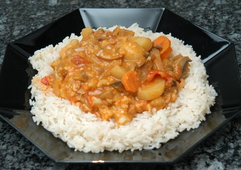

| Zutaten für 4-6 Personen: | |
| 350 g | frühe Kartoffeln |
| 250 g | Blumenkohl |
| 1 | grosse Zwiebel |
| 2 EL | Ghee |
| 7 cm | Ingwer |
| 1-2 | grüne Chilischote |
| 1 EL | Paprikapulver |
| 2 KL | Korianderpulver |
| 1 EL | Currypulver mild |
| 1 Würfel | Gemüsebouillon |
| 4 dl | Wasser |
| 400 g | Tomaten, Pelati, aus der Dose, gehackt |
| 250 g | Champignons |
| 1 | Aubergine |
| 1/2 KL | Salz |
| 1 | grüne Peperoni |
| 2 | Rüebli |
| 1 EL | Maizena |
| 1.5 dl | Kokosmilch |
| 3 EL | gemahlene, geschälte Mandeln |
Kartoffeln waschen, nur schälen wenn nötig, in Würfel schneiden.
Blumenkohl in kleine Röschen teilen.
Zwiebel in Ringe schneiden.
Ghee im Wok oder Bratpfanne erhitzen. Das Gemüse bei mittlerer Hitze 3 Minuten Rührbraten und von der Herdplatte ziehen.
Ingwer schälen, raffeln, zugeben.
Chilischote (mit Handschuhen) halbieren, entkernen, fein schneiden und zugeben.
Alle Gewürze zugeben, die Pfanne bei mittlerer Stufe auf die Herdplatte ziehen.
Den Gemüsebouillon-Würfel dazugeben und 4dl Wasser dazugiessen.
Tomaten/Pelati zugeben.
Champignons waschen, ganz zugeben.
Aubergine waschen, Stielansatz entfernen und in Würfel schneiden, zugeben.
Mit Salz würzen und zugedeckt 30 Minuten köcheln lassen.
Peperoni waschen, Kerngehäuse entfernen und in Streifen schneiden.
Rüebli schälen und in Scheiben schneiden. Peperoni und Rüebli dazugeben und weitere 5-10 Minuten köcheln lassen.
Maizena und Kokosmilch kalt miteinander verrühren, dann unter das Gemüse mischen und nochmals aufkochen.
Mandeln unter das Curry mischen, 2 Minuten kochen dann servieren.
Patricia Krummenacher, Indischer Kochkurs, 2006
Recht aufwendiges Rezept und es kommen grosse Mengen dabei heraus. Schmeckt ganz gut. RE 8.11.2009
@LINKBACK_TAG@ @WAKELOCK@